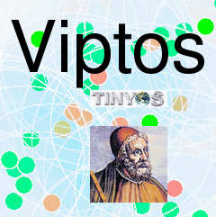

|
 |
TinyOS is an event-driven operating system designed for sensor network nodes that have very limited resources (e.g., 8K bytes of program memory, 512 bytes of RAM). TinyOS, is used, for example, on the Berkeley MICA motes, which are small wireless sensor nodes. nesC is an extension to the C programming language designed to embody the structuring concepts and execution model of TinyOS.
nc2moml
is used to convert nesC files (.nc) into MoML
(.moml) files. This will create the Ptolemy II libraries of
components that are used to assemble models. TinyOS provides a
rich library of nesC components. If you install TinyOS 1.x in
$PTII/vendors/ptinyos/tinyos-1.x , then the Ptolemy
II configure script will find it and automatically make the TinyOS
libraries available.